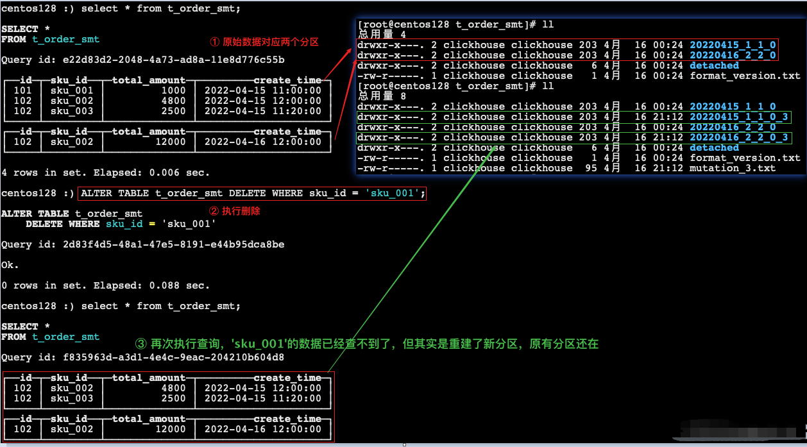
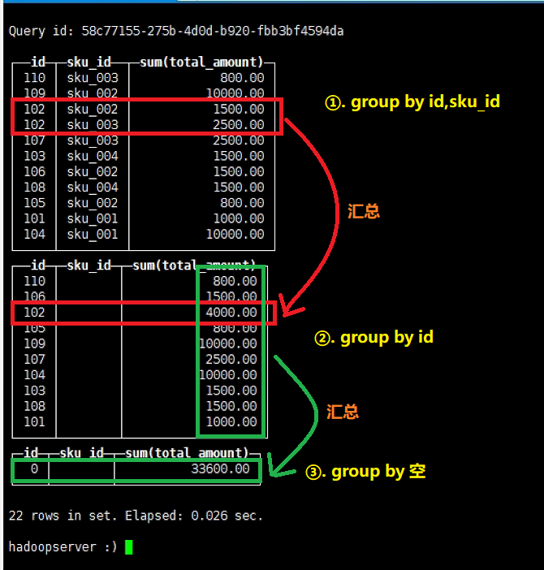
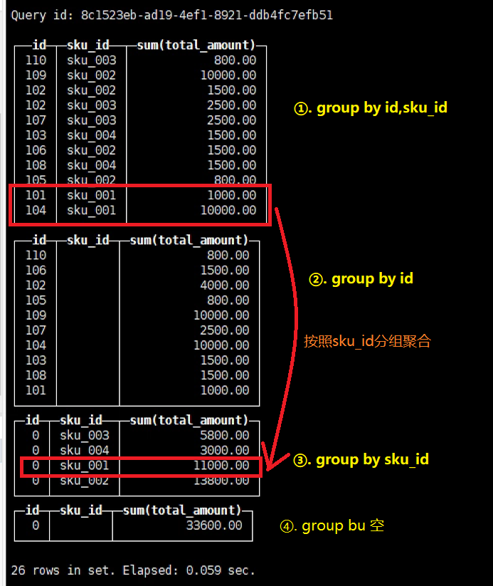
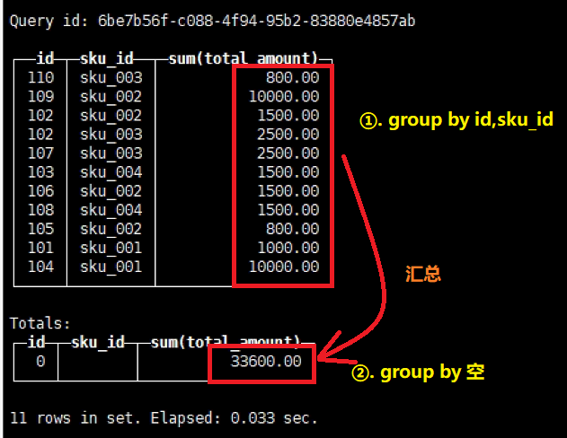
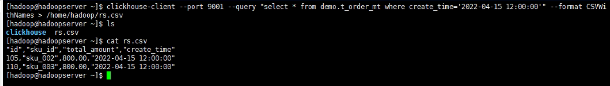

SQL操作
Table of Contents
前言
基本上来说传统关系型数据库（以 MySQL 为例）的 SQL 语句，ClickHouse 基本都支持， 这里不会从头讲解 SQL 语法只介绍 ClickHouse 与标准 SQL（MySQL）不一致的地方。
一、CREATE
1.1 创建数据库
# 用于创建指定名称的数据库 CREATE DATABASE [IF NOT EXISTS] db_name;
1.2 创建数据表
CREATE TABLE [IF NOT EXISTS] [db.]table_name [ON CLUSTER cluster] ( name1 [type1] [DEFAULT|MATERIALIZED|ALIAS expr1], name2 [type2] [DEFAULT|MATERIALIZED|ALIAS expr2], ... ) ENGINE = engine
DEFAULT expr：默认值，用法与SQL类似。MATERIALIZED expr：物化表达式，被该表达式指定的列不能被INSERT，因为它总是被计算出来的，对于INSERT而言，不需要考虑这些列。 另外，在SELECT查询中如果包含星号，此列不会被查询。ALIAS expr：别名
创建表的三种方式：
直接创建
create table t1(id UInt16,name String) engine=TinyLog
创建一个与其他表具有相同结构的表
CREATE TABLE [IF NOT EXISTS] [db.]table_name AS [db2.]name2 [ENGINE = engine]
使用指定的引擎创建一个与
SELECT子句的结果具有相同结构的表，并使用SELECT子句的结果填充它
CREATE TABLE [IF NOT EXISTS] [db.]table_name ENGINE = engine AS SELECT ...
二、INSERT
基本与标准 SQL（MySQL）基本一致
向表中添加数据
insert into [table_name] values(…),(….)
从表到表的插入，用于根据查询条件向表中同步数据
insert into [table_name] select a,b,c from [table_name_2]
三、UPDATE 和 DELETE
ClickHouse 提供了 Delete 和 Update 的能力，这类操作被称为 Mutation 查询，可以看作是 Alter 的一种。
虽然可以实现修改和删除，但是和一般的 OLTP 数据库不一样，Mutation 语句是一种很“重”的操作，而且不支持事务。
“重”的原因主要是每次修改或者删除都会导致放弃目标数据的原有分区，重建新分区。所以尽量做批量的变更，不要进行频繁小数据的操作。
删除操作
alter table t_order_smt delete where sku_id ='sku_001';

修改操作
alter table t_order_smt update total_amount=toDecimal32(2000.00,2) where id=102;

由于操作比较“重”，所以 Mutation 语句分两步执行，同步执行的部分其实只是进行 新增数据新增分区和并把旧分区打上逻辑上的失效标记。直到触发分区合并的时候，才会删 除旧数据释放磁盘空间，一般不会开放这样的功能给用户，由管理员完成。
四、查询操作
ClickHouse 基本上与标准 SQL 差别不大：
- 支持子查询；
- 支持 CTE（Common Table Expression 公用表达式 with 子句）；
- 支持各种 JOIN，但是 JOIN 操作无法使用缓存，所以即使是两次相同的 JOIN 语句，ClickHouse 也会视为两条新的 SQL；
- 窗口函数：目前最新版本已经支持；
- 暂不支持自定义函数；
- GROUP BY 操作增加了 with rollup、with cube、with total 用于按不同维度统计。
插入数据
create table t_order_mt ( id UInt32, sku_id String, total_amount Decimal(16, 2), create_time Datetime ) engine = MergeTree partition by toYYYYMMDD(create_time) primary key (id) order by (id, sku_id); -- 插入数据 insert into t_order_mt values (101, 'sku_001', 1000.00, '2022-04-15 09:00:00'), (102, 'sku_002', 1500.00, '2022-04-15 10:30:00'), (102, 'sku_003', 2500.00, '2022-04-15 12:30:00'), (103, 'sku_004', 1500.00, '2022-04-15 13:00:00'), (104, 'sku_001', 10000.00, '2022-04-15 13:00:00'), (105, 'sku_002', 800.00, '2022-04-15 12:00:00'), (106, 'sku_002', 1500.00, '2022-04-15 10:30:00'), (107, 'sku_003', 2500.00, '2022-04-15 12:30:00'), (108, 'sku_004', 1500.00, '2022-04-15 13:00:00'), (109, 'sku_002', 10000.00, '2022-04-15 13:00:00'), (110, 'sku_003', 800.00, '2022-04-15 12:00:00');
with rollup（上卷）：从右至左去掉维度进行小计
select id,sku_id,sum(total_amount) from t_order_mt group by id,sku_id with rollup;
with cube：从右至左去掉维度进行小计，再从左至右去掉维度进行小计
select id,sku_id,sum(total_amount) from t_order_mt group by id,sku_id with cube;
with totals：只计算合计
select id,sku_id,sum(total_amount) from t_order_mt group by id,sku_id with totals;

五、ALTER 操作
同 MySQL 的修改字段基本一致：
新增字段
alter table tableName add column newcolname String after col1;
修改字段类型
alter table tableName modify column newcolname String;
删除字段
alter table tableName drop column newcolname;
六、导出数据
clickhouse-client --port 9001 --query "select * from demo.t_order_mt where create_time='2022-04-15 12:00:00'" --format CSVWithNames > /home/hadoop/rs.csv
